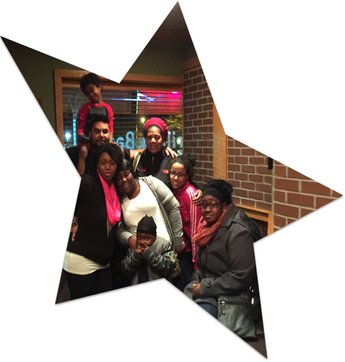

My name is Ronald Burford,
Currently, I am a Highly Energetic, Membership Services professional, that brings teamwork, empowerment, dedication, and fun, to my environment. I have served as a Liaison, using Microsoft Office to enter data, track information, take payments, and work closely with children, families, and community partners, housed at the Boys & Girls Club Dane County locations for over seven years.Each year I take 2 to 3 training relevant to the field I am in at the time. Working to keep my skills sharp, I have taken advantage of the YWeb Career Academy, to advance my knowledge in programing and design. I am confident that my skills and experience has prepared me to perform well in a fast-paced, challenging, and team oriented workplace.)
It is with high excitement I welcome the opportunity to meet face to face and discuss further. In the mean time, here's a link to some of my other work.
Sincerely
Ronald Burford.
Copyright 2016 - All Rights Reserved - Mr. Ron Burford